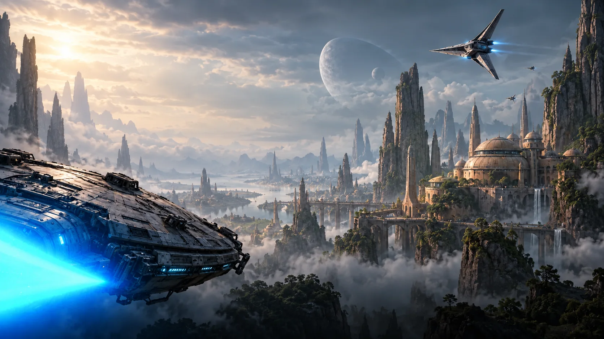

A different kind of day out.
Market lanes, hidden courtyards and stories waiting around every corner. Explore at your own pace.

Step inside the adventure A world beyond.Leave the familiar behind. Wander through ancient spires, discover a bustling frontier outpost and find your own corner of Planet Aster.
Market lanes, hidden courtyards and stories waiting around every corner. Explore at your own pace.
Come for a day of discovery or linger for a longer escape. Start with the experiences that speak to you.
Take the pilot's chair in Frontier Flight. Discover the cockpit, meet your crew and imagine a journey to the edge of the known galaxy.
The horizon is only the beginning.
Make the outpost your home base. Our fictional Observatory Lodge concept pairs quiet rooms with wide views of the frontier skyline.
Choose a starting point for your visit. This is a fictional travel concept; packages are illustrative and booking is not available.
A day exploring Planet Aster's market lanes, courtyards and frontier stories.
Discover the destination ↗A destination visit with a closer look at the Frontier Flight starship experience.
Explore the experience ↗A slower journey with the Observatory Lodge as your imagined home base.
Discover the lodge ↗